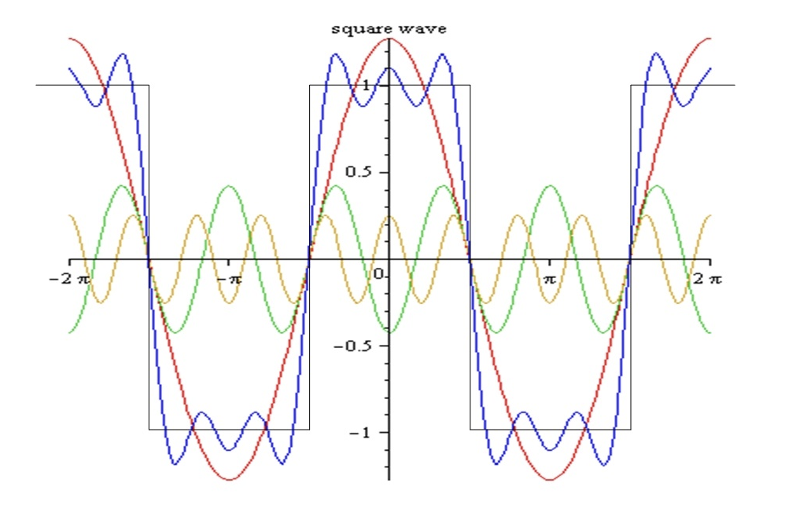
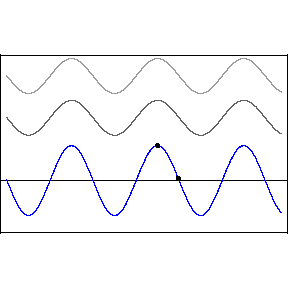
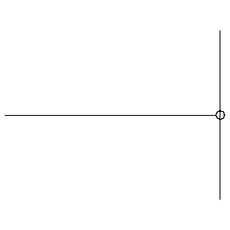
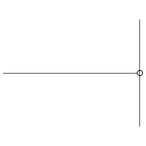
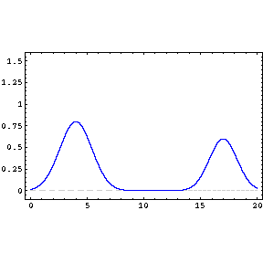
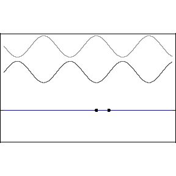
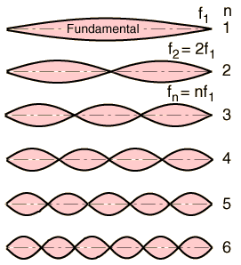
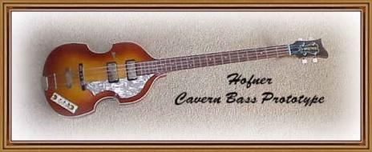
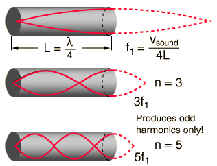

Standing Waves

"The English may not like music, but they
absolutely love the noise it makes"
Thomas Beecham

Principle of
Superposition
"When two or more waves of the same nature travel past a
point at the same time, the displacement at that point is the
sum of the instantaneous displacements of the individual
waves" (True
for waves of small displacement)
The inverse of the superposition
principle allows us to break up a complicated wave-form into a sum
of sine (cosine) waves. This is known as
Fourier's
theorem, which
means that an analysis of the properties of sine waves can be
applied to any periodic wave. The three sine waves, red,
yellow and green, in the diagram below add together to give the
blue wave, which begins to approximate the square wave.

-
Phase Difference Interference
Restricting ourselves to two waves
with the same wavelength, frequency and amplitude, but which
differ in phase,
we obtain
where the frequency and
wavelength of the resultant wave, y, are the same as the
original waves, but it's amplitude y
'm is
dependent on the phase difference.
When
the waves are said to interfere
constructively, when the interference is
destructive.

The animation demonstrates
the interference described above, where the phase
difference between the upper two waves is slowly
varying.
(All wave animations
on this page courtesy of Dr. Dan Russell, Kettering
University)
-
Phase Changes on
Reflection
- Consider a pulse on a string moving from left to right.
When the pulse reaches the end of the string, depending on how
the string is attached, the pulse will be reflected with (fixed
end, left below) or without (moveable end, rigth below) a phase
change.
 

- If both ends of the string are fixed the pulses traveling
right and left will interfere, left below. If, instead of
pulses, we imagine traveling waves of the same amplitude,
frequency and wavelength, but traveling in opposite directions
we obtain the standing wave pattern, below right.


Mathematically, for the situation
of two waves moving in opposite directions, we can write,
The right-most function is not
a traveling wave, it represents the time and spacial
dependence of the standing wave pattern.
The whole string will look as if it
is vibrating in Simple Harmonic Motion, where the amplitude of the
oscillations is position dependent. When the frequency is
large enough the string takes on one of the forms shown below
right. Points on the string which remain stationary are
called nodes, maximum displacement positions are
called antinodes.
- The position of the nodes is defined by sinkx = 0 and the
antinodes by sinkx = 1, thus for nodes we have (n any positive
integer)
or nodes occur
at half wavelength intervals.
- For a string of fixed length L, the frequency of the standing
wave is given by
. From above, the wavelength is given by 2L/n, where n can
take on any positive integer value.
- Therefore the general expression for the natural
frequencies of the string is given by
f1 is called the fundamental frequency or first
harmonic.
f2 f3 f4
... are called the 2nd, 3rd, 4th ... harmonics.
The standing wave patterns for n=1-6 are shown in the diagram
at right.
- These standing wave patterns are exactly the modes of
vibration of the strings of stringed musical instruments, e.g. guitar,
violin ,
cello . When such a string is set vibrating the sound
produced is a combination of the fundamental and all harmonics.

- We know that the velocity v, of a wave on a string is given by

Tuning of a stringed instrument is achieved by
adjusting the tension, which in turn changes the wave velocity
and therefore the frequency.
- A vibrating column of air (constrained in a tube) will
produce similar standing wave patterns. By adjusting the
length of the column different fundamental frequencies are
obtained. This is the operating principle of woodwind
and brass
instruments. The diagrams below are for a tube closed at
one end. Similar standing wave patterns can be drawn
for a tube open at both ends.

- The energy (volume) of the fundamental frequency is always
larger than the other harmonics.
- All standing wave patterns undergo attenuation
with time, their energy (volume) gradually decreases as energy
is lost to the surroundings (friction, air resistance)
- In the above analysis we have assumed that the wave velocity
is independent of frequency. In other words, as the
frequency changes the wavelength changes such that remains
constant. This is not always true. Sometimes the
wave velocity depends on the frequency. In this case the
medium is said to be DISPERSIVE.
For electromagnetic waves all media is dispersive; blue light
(smaller wavelength) travels faster than red light (larger
wavelength) in water leading to the spectrum of colours
observed in a rainbow.

Air is not
a dispersive medium for sound waves. You hear high and low
frequencies emitted by a source at the same time. Aural
communication would be much more difficult if this were not the
case.
When a third grader was asked to cite
Newton's 1st Law, she said,
" Bodies in motion remain in motion, and bodies at rest stay in
bed unless their mother's call them to get up"
Dr. C. L. Davis
Physics Department
University of Louisville
email: c.l.davis@louisville.edu